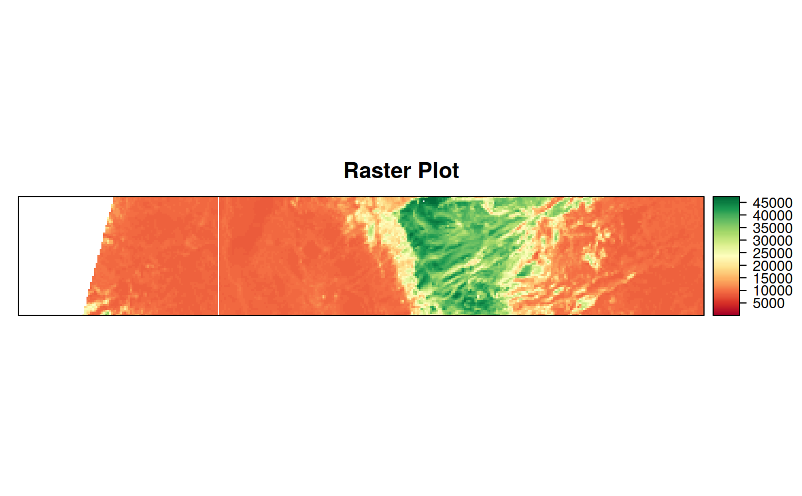

function to crop a raster file/rast_file on a given extent.
The cropping extent can be:
directly passed (as a sprawlext object or numeric array);
derived from a different object from which a sprawlext object object
can be derived (see details)
crop_rast(rast_object, ext_object, mask = FALSE, pad = 1,
out_type = "rastobject", out_file = NULL, out_dtype = NULL,
out_nodata = NULL, compress = "None", parallel = FALSE, cores = NULL,
verbose = TRUE)
Arguments
| rast_object |
either an R object of class Raster, or a character string
corresponding to a raster filename (with full path) |
| ext_object |
either an object of class sprawlext, or an R object or
filename from which an object of class sprawlext can be obtained (see
sprawl::get_extent()) |
| mask |
logical if TRUE, and ext_object is a polygon shapefile or
R object, the output is also masked on the boundaries of ext_object
|
| pad |
numeric extent of a "padding area" to be kept with respect to
crop_extent (in number of pixels). Useful to be sure not to crop "too much"
for example when cropping before extracting features suche as in extract_rast,
Default: 1
|
| out_type |
character indicates the type of object to be returned:
"rastobject" return a raster rast_file accessing the saved cropped file "rastfile" return the filename of the GTiff file corresponding to the
cropped GTiff file. If out_file == NULL, this corresponds to a file
saved in R temporary folder. "vrtfile" return the filename of the vrt file built for cropping
the input raster (no saving to disk is performed)
, Default: "rastobject" |
| out_file |
character filename to be used to save the cropped
raster.
|
| out_dtype |
character data type of the output masked files, according
to gdal specifications for GTiff files ("Byte", "UInt16", "Int16", "UInt32",
"Int32", "Float32", "Float64", "CInt16", "CInt32", "CFloat32" and "CFloat64").
If NULL, the data type is retrieved from the input, Default: NULL
|
| out_nodata |
numeric value to be used to fill (eventual) NoData areas
outside the cropping extent (or the cropping polygon if mask = TRUE). If
NULL, it is set automatically by raster::writeRaster depending on data type
of the output raster.
|
| compress |
character compression option to be used to saved the cropped
raster ("None", "PACKBITS", "LZW", "DEFLATE), Default: "None"
|
| parallel |
logical if TRUE, use ClusterR to implement multicore
processing while masking. This speeds up execution for large rasters,
Default: FALSE (Ignored if mask = FALSE)
|
| cores |
numeric Number of cores to use in case of parallel processing.
If NULL, it defaults to parallel::detectCores()-2, Default = NULL
(Ignored if mask = FALSE)
|
| verbose |
logical if FALSE, suppress processing messages, Default: TRUE
|
Value
either a Raster object containing the cropped raster, or a gdal vrt
or GTiff filename corresponding to it, depending on out_type.
Examples
out_cropped <- crop_rast(in_rast, in_vect)
#> crop_rast --> Cropping: in_rast on extent of: in_vect
#> An object of class "sprawlext"
#> Slot "extent":
#> xmin ymin xmax ymax
#> 407265 5156295 436665 5186085
#>
#> Slot "proj4string":
#> [1] "+proj=utm +zone=32 +datum=WGS84 +units=m +no_defs +ellps=WGS84 +towgs84=0,0,0"
#>
#> An object of class "sprawlext"
#> Slot "extent":
#> xmin ymin xmax ymax
#> 412635 5161665 423525 5163555
#>
#> Slot "proj4string":
#> [1] "+proj=utm +zone=32 +datum=WGS84 +units=m +no_defs +ellps=WGS84 +towgs84=0,0,0"
#>
